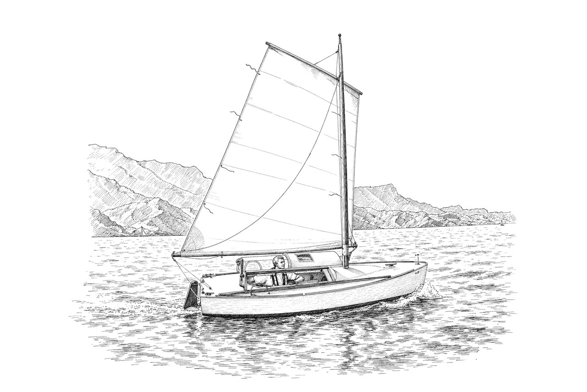

Chapter 17
Boats and the people who built them

Fortunately every time I have gone beyond sensible and into stupid my Paradox has bailed me out.
Alastair Law, Paradox builders mailing list, 31 March 2015
A green plywood hull slides down a slipway at Poole Harbour on a cold morning in April 2003, watched by the man who built her alone in a Yeovil garage. Twenty two years later a different camera catches another English built hull, close hauled off the Danish island of Ærø, loaded for a week's cruise and overtaking two much larger yachts whose crews had not expected to be overtaken. The first boat is Little Jim. The second is JoHanna, and the sailors aboard her that day had never met the man who built her.
Little Jim and Alastair Law
Alastair Law, a CAD engineer in Yeovil, England, assembled a Paradox in the same 3D software he used at his day job before he cut a single panel, time he judged well spent since it settled a string of construction questions before they could become mistakes in plywood. His only earlier boats were a school canoe and an 8-foot pram dinghy built some twenty-five years before, and he built almost entirely alone, in a garage only about two feet longer than the finished hull with two feet of clearance on either side, so that turning her over needed a second pair of hands and a set of improvised roller skates. He fitted her chine logs from a single piece of timber rather than laminate them, since a dry test fit had left the bent wood under too much stored energy to risk removing it again for gluing, a choice he said years later he would not repeat.
Building her took the better part of two years in evenings and weekends. By March 2003 every part of her was made, with only paint and fitting out left, and he gave the fullest cost account on record for a Paradox: the boat herself came to 2,751 pounds, including most of the power tools bought for the job, and a trailer built to his own design, simple enough to launch and recover single handed without wetting it, added another 1,502 pounds. He launched Little Jim from Ridge Wharf boatyard on the river Frome, off Poole Harbour, on 19 April 2003, the first Paradox built in the United Kingdom. "It floats! It's watertight! It keeps bumping into things!!" he wrote the same day, in a force six blow nobody had forecast. Leaning out on deck to judge her stability he could not tell whether he had reached ten degrees of list or something nearer forty five, and gave up to wait for calmer water. Four days later he sailed her for the first time and came home delighted. She held a course for two miles with the tiller lashed, showed no leeway he could see, and heeled twenty degrees at most. "Whooee!! what a boat!" he wrote that evening.
A Portland Harbour round trip that May took her within two miles of the tidal race off St Albans Head with the wind against the tide, green water breaking over her deck the whole way without a drop reaching the cabin. The real test came that September, on a passage no Paradox had made before: Poole to the Isle of Wight and back, by way of the Solent. Law set off alone, reefed from the start against a forecast of five to seven. Clear of the harbour the sea built to five or six feet and he rode it easily enough, seasick by half past nine, which he took as the ordinary price of the crossing. As he closed on Hurst Narrows he saw the wave every sailor dreads, growing as it came: in his own words, "a vertical wall of water about 6 feet high." It picked the boat up and pushed her over until he could see water rising up the hatch window. "We must have gone over to 80 or 90 degrees," he wrote a few days later, "but by the time I had recovered and could look around again LJ was sailing on as if nothing had happened." He judged afterward that he had been wrong to set out that morning, and that no conventional boat of her size would have survived the crossing, "but the fact that I did complete it gives me confidence that, as long as I am not so stupid again, LJ will take me wherever I want to go."
The passage home was gentler and then stranger. A few miles short of Poole the wind died altogether and an odd slapping began under the flat bottom, the sound every Paradox sailor eventually meets and nobody quite expects the first time. It turned out to come from a seismic survey ship towing two cables a mile and a half long, which hailed him to steer wide. As it passed, the slapping became a banging "as if someone were hitting us with rubber sledge hammers," fading once two yellow, finned tow fish had gone by astern.
Her ballast shifted gradually over the following years, traded for the stores and gear a sailor brings aboard anyway. Launched with about seventy kilograms of water and a hundred and eighty of lead, she carried only fifty to seventy kilograms of lead by 2020, the rest swapped for batteries, anchor chain, tinned food and a bicycle, each doing double duty as ballast. A gale years later at Bideford Bar put a number on something harder to measure. Roger Barnes, president of the Dinghy Cruising Association, was aboard another boat that day, his own Ilur, and watched Law's Paradox go into the bar just ahead of him in breaking seas he judged at six to eight metres against her five metre mast: she "vanished completely between the waves" and came through unaided, while Barnes capsized, bailed out twice and put out a Mayday call he ended up not needing. Her one clean mechanical failure in two decades came off Lepe Spit in the Solent in 2020, when her rudder blade sheared through its pivot bolt in disturbed water; the rest of the passage went ahead without incident.
When Derek Clark, Enuf's builder, threatened to give up on his own hull, Law talked him out of it with a line that became part of the list's own folklore: "No need to leave Derek, in fact you have a duty to stay. You contain 11% of the complete build information in the known world." Eight years after his own launch, with the boat still under him and nothing changed that mattered, he put the builder's creed in one line: "If it ain't broke, why fix it? It would be easy to change Paradox, a lot harder to improve it." She is still sailing from Yeovil, in the one pair of hands that built her.
Enuf and Derek Clark
Derek Clark, a first time builder in Wolverhampton, in the English Midlands, began his own Paradox in 2004. He worked in exterior grade plywood throughout, reasoning the hull would end up fully covered in epoxy and glass regardless of the ply's own rating, and he built up her ballast from eleven kilogram lead pigs and a length of scrap lead he found, shaped like a pipe, discarded in a skip down the road. The boat's working name through most of the build was So-So. He renamed her Enuf on his wife's suggestion, late enough that the group's own photo folder had to be deleted and started again under the new name.
Shipping brass pipe from America for the boom axle's pivot joint looked to him like a disproportionate carbon cost for so small a part, so he fabricated the fitting instead from galvanised steel pipe, sanded and sealed in epoxy against rust. The tiller he built the same resourceful way: a length of one inch galvanised pipe, worked cold through a hole drilled in a block of wood until it took the curve he wanted, cut to length and given a touch up bend in a vice. He painted her in three shades of green over a yellow bottom, the colours chosen from the wheel to complement a bright red sail bought for visibility, the bottom colour picked so that a scratch would show early and a capsized hull would be easy for a rescue helicopter to spot.
He launched her in August 2006 and sailed her for the first time over three days in Poole Harbour, in company with Alastair Law and Little Jim. A month later he put her up for sale. She sold within days and set off by road toward a new owner in Norway, Robert Biegler. Bill Serjeant, who kept the UK registry, later called her the second Paradox built in Britain, after Law's.
Biegler shipped her to Trondheimsfjord and sailed her there for several years, working her with a yuloh he built himself rather than an outboard, building a second one after the first was stolen. On her first short outings she carried lee helm and made about twenty five degrees of leeway; sailing her lower in the water and further to leeward cut the leeway to about ten degrees and cured the lee helm. In 2009 water had worked into the lower rudder stock through its pintle. He dried the wood with hot water bottles and a hot air gun, then locked the repair with a wrap of carbon fibre around the pintle, isolated from the steel by a layer of glass. At some point in his ownership the boat was renamed Minnow, the name she kept from then on.
Biegler sold her in August 2013 to Bill Serjeant, already the builder and owner of Faith, sight unseen and delivered by road and ferry from Norway. It was something of a reunion: when Derek Clark had sold the boat and her trailer separately back in 2006, Serjeant had bought that original road trailer for Faith himself. Before the sale Biegler warned him she leaked somewhere around the vent box where the mast is stepped, without ever finding the exact source; tracing and curing it took four separate operations that September and October, the last of them a scrape into the drain's exit that found nothing wrong and sealed it with epoxy anyway, "in theory" solving a problem that, in practice, remained to be seen. Kept the name regardless of the sailor's old superstition against renaming a boat, or the newer one against a green hull: Serjeant preferred "providence" to "luck," and judged the boat had already survived worse, a Norwegian winter frozen in afloat among it. Removing a polystyrene buoyancy block Clark had built into her, he found it readily caught fire and threw thick black smoke, and he threw every trace of it out as household waste.
Serjeant sold her on in 2014. The sale closed only the following July, to a new owner, Richard Green. Within weeks a fellow builder who had met Green in person relayed his verdict: he enjoyed sailing Minnow on the river, but she would not tack, and needed to be helped round with the sculling oar. A Paradox answering to the same name turns up again in the Facebook group between 2020 and 2024, on the English east coast, her cabin top in exactly the state Serjeant had once described; whether she is the same hull is probable but was never confirmed, and her owner last offered her for sale in 2024 with her cabin top off and her sail needing renewal, because he had to move and could not take her with him.
Zoë and Glen Maxwell
Glen Maxwell, the Live Oak boatbuilder who had founded the builders' mailing list that July, launched Zoë on Friday the 13th of November 2001, finished to a deliberately plain workboat standard rather than the marine grade plywood the plans allowed. She carried only about 75 lb of ballast and no water at all for her first sail, and even that light she could only be heeled to about 45 degrees by standing on the dock and hauling the mast down by hand, a stability her builder judged would only improve once properly loaded.
Her original sail did not stay with her. Maxwell judged it a disappointment from the start, reluctant to power up in light air and inconsistent from one tack to the other, and the gap showed plainly the day he sailed alongside Matt Layden's own Paradox: off the wind the two boats matched each other, but the moment they turned to windward Layden's boat pulled away and left him, in his own words, "like I was dragging an anchor. I was so disappointed I wanted to vomit." A second sail fixed it, and the first one passed on in 2007 to Bill Serjeant for Faith's own launch.
Maxwell sold Zoë in November 2010, for $6,000, to Mark Hamilton of the San Francisco Bay Area, a sailor who had wanted a Paradox for fifteen years and lacked the woodworking skill to build his own. He never got the chance to sail her. The hauler's enclosed trailer caught fire in June 2011, under road transport from Florida toward California, for reasons nobody ever determined, and the blaze could not be put out before boat and trailer were a total loss. "I know Glen cherished Zoë, and owning it was a dream I held for more than 15 years," Hamilton wrote to the list the same week. "For someone like me, not having the wood working skills to build one, the chance to own this Zoë was a lifetime dream... I still can't believe it." The hauler had advertised full insurance; it turned out he carried none. He sent a few checks worth a couple of thousand dollars, then stopped answering calls and letters, and Hamilton wrote the balance off rather than pursue it further. "You put your heart and soul into building one of the finest Paradox's ever built," he told Maxwell the following spring.
Maxwell himself had moved on well before that. Finding Zoë awkward for two up cruising, he had already bought a second, smaller boat, a Peep Hen he named Hedwig, reasoning that the cost of fetching her secondhand came to roughly what Zoë's own materials had cost, for far less building time. By 2016 he was sailing a junk rigged boat of his own, Tao Zou, the first American ever to enter England's Jester Azores Challenge; bad weather cost him two sail panels and his self steering gear partway across, and he beat the rest of the way by hand. Diners at a marina restaurant in the Azores, seeing his small mast come in days later, rushed into the street to meet him, the first junk rigged boat home that season. He put his own trust in the design plainly, feeling safer in a boat this size than in something bigger "because I'm sitting in her and not on her," a judgement he offered from thirty six years of sailing and over thirty thousand blue water miles.
Faith, Bill Serjeant and James Hall
Bill Serjeant built Faith strictly to Matt Layden's plans after a kit that a British firm had agreed to cut for him came to nothing. He weighed some eighty candidate names before settling, in March 2006, on one that said as much about the project as about the boat: "I require faith more than anything to make my dream of ownership a reality." He worked with little more than a rip saw, a jigsaw and more clamps than he liked to admit to, in a garage barely eight feet wide against the hull's own four feet of beam, and more than once on the lounge floor or the kitchen table while his wife was out.
Answered once with an "it's only fourteen feet" quip about the scale of the commitment, he had the figures to settle it: he had also built a twenty five foot boat, and judged there was markedly less work in that bigger hull than in the Paradox he had under way, at only marginally lower cost. Even a full time professional with power tools, he reckoned, could not finish a Paradox in under six months. Partway through he called on Alastair Law in Yeovil to see Little Jim in person, a visit that left him more determined to carry on with his own build; and he admired a fellow UK builder's finished Paradox, Mark Waters', from photographs alone, calling the work "superb."
She went into the water at Burnham on Crouch, in Essex, one evening in June 2007, carrying Zoë's old sail, and reached the Isles of Scilly twice over the two summers that followed, the second time in company with Little Jim. She was Coppercoat antifouled before that first launch specifically because she might spend long periods on a mooring, some cruises running over a month, and rather than commission a new trailer Serjeant bought Derek Clark's old one for Enuf secondhand. Serjeant sold her in 2009, in his own words on his blog "to the very first person who offered to take her unto himself," a decision he admitted left him with a pang of guilt even as he judged her, looking back, perhaps the best boat he had ever owned.
By the following year she belonged to James Hall, an experienced sailor who had already taken a twenty one foot yacht of his own a long way alone. Hall bought a new, higher peaked sail, cut from the same pattern as the replacement that had already fixed Zoë's own windward work, and said so to the list in terms that leave no doubt what it changed: before it she had been slow to tack and reluctant to make any progress to windward on port tack, so that he had to run the engine whenever his destination lay upwind. "I've recently bought a new sail for my Paradox and it's transformed the boat," he wrote. "Now with my new sail all is sweetness and light." He rarely needed the engine again. Hall sailed her from Poole for years, until his death in 2016. What became of her afterward is not recorded.
Scout and Lezlie Henson
Lezlie Henson built this boat in the Houston area, her first beyond a practice dinghy, insulating her, casting her own lead ballast and building a gimballed stove modelled on the one she had seen aboard Zoë. "My neighbors know me as the woman that spends most of her time in the garage," she wrote partway through, noting that the FedEx driver had started stopping by to check her progress and that strangers from around the world were following the blog where she posted it. Her late father had built a powerboat of his own years before; her brother told her she had got the boat building gene from him.
The marriage that had begun the project did not survive it. Henson sold the boat, then named Tardis and almost finished, in February 2013, without ever having sailed her, and said why on her own blog, in words kept exactly as she wrote them: "After the separation, she was a reminder of a dead dream. I worked on her, but it just wasn't the same. I had to revise my dream; for me to sail her alone, but I lost my motivation." She added only this: "I do wish I had been able to sail her... at least once."
Buying someone else's unfinished "blood sweat and tears" felt a little like "cheating the system," Sean Mulligan wrote to the list before he had even seen the boat in person, a debt he resolved to repay by sailing her hard. He bought her about ninety five percent complete, finished her that summer and launched her on 12 September 2013, renamed Scout. At six feet four inches and 220 to 230 lb, he filled her cabin in a way her builder never had: a photograph that made him look like he was wearing the boat rather than sitting in her prompted him to admit, "my friends say I look like I am on a carnival kiddie ride when sailing Scout!" He made the authorship plain to readers who would otherwise never have known it: "Lezlie is Scout's true Mamma! She built Scout from the ground up from nothing more than a set of plans...and did one heck of a job on her. I am very happy that I get to be Scout's custodian."
Henson herself read the boat's later story in print, nine months after selling her unsailed, and answered in the same place where the whole readership could see it: "I am so proud of Scout, and so glad you are taking her out as much as you do. She is a capable boat. I have enjoyed watching her adventures."
The following year Mulligan sailed her in the Texas 200 as a fundraiser for a cancer charity, carrying supporters' names on her sides through conditions from calm to 34 knots apparent, and towed another competitor's damaged boat to safety along the way. Henson and Mulligan gave a joint talk on her building and sailing the year after that.
Chris Curtis bought Scout around 2015 and sailed her for years out of North Idaho and the Puget Sound. Her one built in departure from the plans, a matchboard panel closing the aft cabin in place of the designed fixed panel, cost him dearly by 2018: fine stress cracks opened in the plywood deck around its own hatch opening, forcing him to cut off the cabin handholds and pull the side windows to get at the problem, a repair that stalled his wider refit for years. In August 2024 she went to a new owner in Maine, Lee Ober, who trailered her some 3,500 miles home. Mulligan wrote to mark the handover: "Quite a few memories in that old girl. I hope you have as much enjoyment sailing her as I did..." and gave Henson the credit for the boat in the same breath.
JoHanna and Pete Martin
Pete Martin, already a lifelong sailor but a first time boatbuilder, discovered the design in October 2006 and ordered the plans within days. He priced UK marine plywood first, Robbins of Bristol's best grade against a cheaper Far Eastern import, and took the three hundred pound saving, reasoning most of the hull would end up under glass and epoxy regardless of the grade beneath. He began construction on 1 December 2006, in a car port in Cheltenham too small to open its own doors with the boat inside, and spent four and a half years at her, keeping no real count of the hours.
Cutting her bulkheads from UK sized plywood sheets, narrower than the plans assumed, forced small departures no American builder had needed to make, worked out one awkward cut at a time. Excavation work on the Mary Rose, Henry VIII's own flagship, supplied the standing joke that got him through the trickiest of them: a wrongly placed rebate in one of her ribs had simply been plugged with a block of wood, proof, as he put it, that "even the King's master craftsmen got it wrong occasionally." She won Watercraft magazine's prize in 2011 for the most innovative home made boat, and her finished mast, in Douglas fir, weighed exactly 9 kg. A 140 mile river cruise made mostly under the yuloh left Martin confident in her, and in 2013 she gathered with Little Jim and Faith at a Dinghy Cruising Association rally at Poole Harbour, reported at the time as probably the first meeting of three Paradoxes anywhere. The following decade she spent a week on the Milford Haven Waterway alongside Little Jim, the two boats filming each other under sail.
Word in early 2020 was that she would likely be sold that year. What actually happened went unrecorded until a photograph surfaced in September 2025, an ocean away. By then she was sailing out of Kappeln, in Germany, under an owner who introduced himself only as Tobi Tee. That July she had taken part in a three boat flotilla that rounded the Danish island of Ærø, visiting the maritime museum at Marstal and anchoring off Svelmø and at the restored harbour at Mommark before returning to Kappeln. "Johanna was steady, caring and protective, even in higher winds and rougher seas," her new owner wrote. "Despite being heavily loaded, she seemed to be flying through the waves at times." On the leg to Marstal, sailed on a beam reach, she arrived first of the three, the two larger yachts having waited too long to chase her down. "What a great little boat she is!" Pete Martin, her builder, saw the post and answered it himself: "Good to see she's still in her element."
Thor, later Pamela B
Nickolas Bell, who built Thor in South Australia, brought a method to his build that was less about speed than about never trusting a fastener he had not tested. He screwed his hull together dry, checked and rechecked it for symmetry, then glued it and days later pulled every screw back out, backfilling the holes with wooden dowels so that no metal was ever left in the wood to heat and crack the ply as it cured. "It's the long way around," he said of the whole method, "but it never leads to cracks." He tested the flotation of every kind of wood he used by standing a cut stick of each in a jar of water and reading how much stayed above the surface, and he took his ballast question to a university engineering department rather than guess.
He launched Thor on the Murray River in June 2015 and sailed her hard along the Yorke Peninsula and the Spencer Gulf for seven years, through knockdowns that never shook his faith in her, until he sold her in 2022 and built himself a tiny pontoon houseboat instead, riding it 1,550 kilometres down the Murray in seventy nine days with the motor idling for steering only; a Paradox, he judged afterward, could have made the same trip just as well. Mark Brothers bought Thor that year, renamed her Pamela B and, when her windward ability drew doubt on Facebook, answered with a measured result rather than an argument, sailing an unbroken circle without a single tack around the Captain Cook Memorial Fountain on Lake Burley Griffin in Canberra.
Mini and Rob Kellock
Rob Kellock began building this boat at his home workshop in Kirwee, near Christchurch, New Zealand, in September 2014, making her spars, yuloh and rudder before he had even started the hull. She is built entirely in marine plywood under a deliberately rough work boat paint finish, a choice Kellock defended on the reasoning that a Paradox is built to last, and that if she were ever sold the materials under the paint should still be worth something. Before the bottom plywood had even gone on, he judged her, against an earlier and much lighter boat he had sailed, "one hellava overbuilt boat" that would go through the water rather than over it, a verdict her whole sailing life has borne out: no bottom pounding at any speed, only a rushing sound as the bow wave builds.
No Paradox on the water has been measured as carefully as this one. Kellock laid out a GPS-tracked, one-mile equilateral triangle course on Lake Ellesmere in April 2020 for the single purpose of testing the claims that circulate about the design's speed against an actual instrument. "There's lots of anecdotal evidence bandied around on the Internet about what great sailing vessels, Paradox's are," he wrote beforehand. "I say 'codswallop'! Let's examine the facts rather than the fantasy." Six years of logged sailing have borne out the discipline of that approach rather than the folklore: a sustained average around 4.5 knots, five knots rarely held for long, six exceeded only while surfing down a wave face, and once, caught running before a gale in more than 25 knots, touched repeatedly while the boat was, in his own words, "verging on being uncontrollable."
A six day expedition to Nelson over the New Year of 2017 to 2018 opened with her first ever night sail, a 25 nautical mile crossing that a predicted eight hours stretched to thirteen as the wind died and seasickness set in, Kellock retching in the dark with a rising breeze pushing him further out than planned; dawn brought a sea breeze and a run down to anchor at Tinline Bay, where the falling tide left the boat high and dry to a small crowd of curious onlookers ashore.
Kellock tested the harder question for himself in September 2019, rather than take anyone else's word for it. His first plan was to sail 100 nautical miles offshore, then 50; both fell away once the time involved and the exposure to Southern Ocean swells beyond the shelter of Banks Peninsula sank in. He settled on a single night ten miles out. Even at that modest distance, he wrote, the warnings came from every direction: he would capsize, the boat would fall apart, he would drown in the cold without a drysuit, he would die without an engine. He sailed down harbour past Quail Island to a waypoint off Kaiapoi, averaging 2.5 knots over eight hours, then streamed a homemade drogue, fifty metres of line between the two stern cleats threaded through a length of garden hose, and lay ahull for the night. The drogue's motion made him seasick within five minutes, and he spent the hours until midnight incapacitated on the cabin floor, worried less about the boat than about being run down by a ship in the dark. Waking to find he had already drifted four miles toward the beach, he raised a scrap of scandalised sail with the drogue still trailing and let her broad reach clear at three quarters of a knot, enough to fall back asleep until dawn. The whole passage covered forty nautical miles in thirty six hours, drift included, at an average of a little over one knot. His own conclusions, written up the same week, were plain: a drogue only earns its keep together with active sailing, and a Paradox cannot make way to windward under one at all; being seasick is unpleasant and lasted about half a day; and despite everything the onlookers had predicted, "Paradoxes are so well built and have such a safe helm position, I didn't feel unsafe at any time on the boat. I only felt unsafe from other human activity around me..." Of the open sea itself, ten miles beyond the shelter everyone had warned him to respect, his own verdict could not have been plainer: "The open sea is boring. It's a desert out there."
By 2023 five years of regular use had left her needing paint, and the strip down that followed turned up the best proof yet of how the hull had been built: the paint stripper took off ninety percent of the old coat without touching the epoxy underneath, the plywood beneath it "just like new" everywhere it showed. Kellock's own verdict on the whole job, and arguably on the whole build, was characteristically plain: "not even close to gold plated, definitely work grade, but still a very solid build." The standing lug she carried for her first four months afloat gave way in 2018 to a four-sided sprit rig, adopted only after a systematic, several month comparison of both rigs side by side. Kellock still owns and sails Mini, cruising New Zealand's South Island most seasons since.
Other builders, briefly
Don Elliott's own Paradox, The Edge, was one of only two known sailing anywhere by July 2001, besides Layden's own, and went unnamed in public for more than two years, known on the list only as Elliott's Paradox. A UK builder inferred her name from a personal website address ending in edge.htm and asked whether the inference was correct. "I believe to be correct," came the reply, from the same builder, who found the name "quite appropriate" for how she must feel bashing to windward or surfing down a breaking sea. Elliott himself never confirmed it in anything that survives. After his death, a longtime list member, Frederic Tallman, bought her from his family and towed her five states home from Wisconsin to New York, by way of a dinner with Elliott's widow and son to celebrate the deal. She had come to him without a boom or a sail at all, with fibreglass cracking at the rudder's edge and rot in the block that carried it, so the restoration that followed was closer to a rebuild: a new boom and yuloh built from scratch, the rudder block replaced, and a new sail cut to the original plan dimensions. That sail survived its first real test in September 2018, when a sudden gust on Oneida Lake caught her in a standing lug's characteristic tangle, the yard swinging the sail up around the mast in what builders call a Chinese gybe; the heavier cloth came through without a mark. By 2021 she had gone three full seasons without a motor on the fresh water near Oswego, on Lake Ontario's south eastern shore, sailing under the third owner any of these boats had needed in over twenty years.
Geoff Davis, who had rounded Cape Leeuwin in Small Fry a decade before, sold her in July 2020 to a fellow Perth sailor, Gary Nicholls, thanking him in turn for the welcome. By 2023 she sat in storage in Perth while Nicholls worked away from the city for an extended stretch, her present condition unrecorded.
Dave Skaife never settled on a name for his own boat in public, calling her simply "my Paradox," except once, filling out paperwork, when he wrote down "Viking funeral." He sold her in March 2018 from Pensacola to Steve Collins of the Gulf Coast, who gave her the only name she has ever carried in public within weeks of buying her, signing a question to the mailing list about sails simply "Steve C (Paw Paw)."
Cory Sellars, a carpenter in Bruce County, Ontario, heard that a part built Paradox had been abandoned after the death of her original builder, Brian Prescott, who by his own account had passed from cancer before he could finish her. Sellars, already an experienced dinghy sailor on Lake Huron and Georgian Bay, retrieved the hull from a burn pile and towed it home behind a trailer in a snowstorm. The hull was complete but for her epoxy sheathing and a few cut outs, her interior only just begun, built with screws in place of nails; Sellars checked her against the plans, found she tracked closely, and kept faith with the original design rather than start fresh with his own ideas. He renamed her Prescott Eagle in the memory of the man who had begun her, and has been finishing her since 2019 with a CNC machine and a small duplicator, aiming to sail her round Ontario's Bruce Peninsula.
Andrew Graham, in Brisbane, had owned and cruised a trailer sailer for a decade and had never built anything before his Paradox. Standard Australian plywood came in sheets smaller than the plans' own cutting layout assumed, so rather than bend a single sheet for the bottom or trust sides that still flexed with the chine logs in place, he laminated two thinner sheets together for extra stiffness. He checked every bevel by protractor against the lines drawing and matched it with a batten test, trusting measurement over confidence. He launched her as Zero on 29 November 2003 and slept aboard within days, the first Paradox fully documented under sail in Australia. Three years after launch a wooden pole appeared on her deck, fitted to carry an umbrella against the Queensland sun.
Jimmy Lu, in Taipei, had never built a boat before and chose Paradox simply because he liked the design, launching Auspice on 18 February 2008, the first Paradox in Asia. He weighed a cat rig and a junk rig before settling back on the plans' own lug sail, and ballasted her the plain way, loading her down to the waterline marks with a helper watching from outside rather than guessing at a figure of his own. Hugh Miller's Petite Lady, New Zealand's first Paradox, was finished by the end of 2003, but her builder said almost nothing on the list for the next four years, until he finally reported hauling her out in January 2007 after four years on an unmaintained tidal mooring with nothing worse to show for it than a bottom coating due for burnishing.
David C. Smith, a professional boatbuilder of twenty years on the Columbia River in Oregon, began his own Paradox, Swash, strictly to the plans, and traced the conviction to an earlier boat of his own, a modified canoe yawl he judged a disappointing boat in general, a result he laid at his own door for having, in his words, "disrespected the work of the designer." He drew a sharp line between changing a design's geometry or its specified materials, which he held was not a builder's business, and changing details that touched neither, which was. Pressed on the question directly, by a Swedish builder who wanted to lighten his own hull in foam sandwich rather than plywood, Smith reached for the Folkboat: a class whose fibreglass replicas and later "improved" derivatives left him asking whether a boat built that far from the original could still fairly carry the name. His answer for Paradox was the same one he gave for the Folkboat: "The design is what it is. You can't improve it, you can only change it." He carried the same logic all the way to the choice of material: a Paradox built in steel, he argued, would still be a horrible mistake even if it floated, since every weight and every centre in the design had been calculated for plywood, epoxy and glass, and only Layden himself could recalculate them for something else.
What the builders share
Set these builders side by side and two things hold true that no single portrait shows on its own. First time builders outnumber professionals and tradesmen by about two to one: a CAD engineer, a journalist, a firefighter and a carpenter built Paradoxes, and skill at the trade bought no one a faster or surer build. And every one of them chose this one design, out of everything else they could have built, for something read on a page before a single plank was cut. Dave Skaife found his own reason in the designer himself, whom he took for a kind of evil genius of boat design, a man who thinks so far outside the box that the box is forgotten.
That habit of writing things down crossed continents in ways none of these builders planned. Stéphane Cordier, a professional woodworker in Belgium who already owned a nine metre ocean going steel cruiser, wrote to the mailing list on Christmas Eve 2017 to say that he had started building a Paradox of his own and had already finished her bulkheads; Lezlie Henson answered that she had enjoyed building hers and wished him luck. Cordier wrote back within days with the fuller reason he had come looking for the design at all: he had followed her blog from its very first post, found her unsailed Tardis beautiful, and started building his own Paradox about a month earlier because of it. He had never met her and never would. A woman who built a boat she never got to sail had, without ever intending to, recruited a builder on another continent who read every word she wrote.